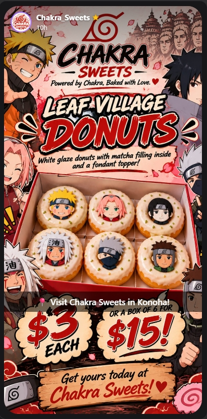
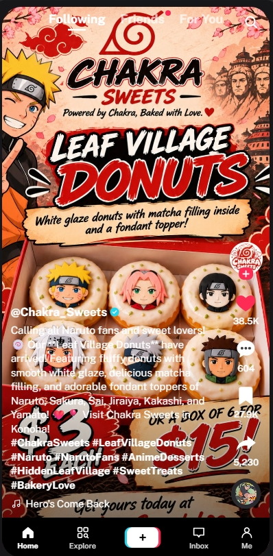
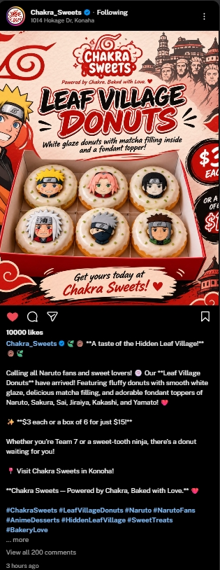

Snapchat
Our Snapchat post

Catch our Leaf Village Donuts feature on Snapchat! Share it with your friends and spread the sweetness around your village.
Check out our latest Leaf Village Donuts promotions across Snapchat, TikTok, and Instagram! Follow along, share the sweetness, and keep up with the latest treats from Chakra Sweets.

Catch our Leaf Village Donuts feature on Snapchat! Share it with your friends and spread the sweetness around your village.

Watch our TikTok promotion and see why these matcha-filled, fondant-topped donuts deserve a spot on your For You page!

Visit our Instagram post, check out the donut details, and share it with fellow Naruto fans and sweet lovers!
Check out Chakra Sweets on Snapchat, TikTok, and Instagram to see our posts and stay connected with our bakery.
Explore Our Menu 🍩